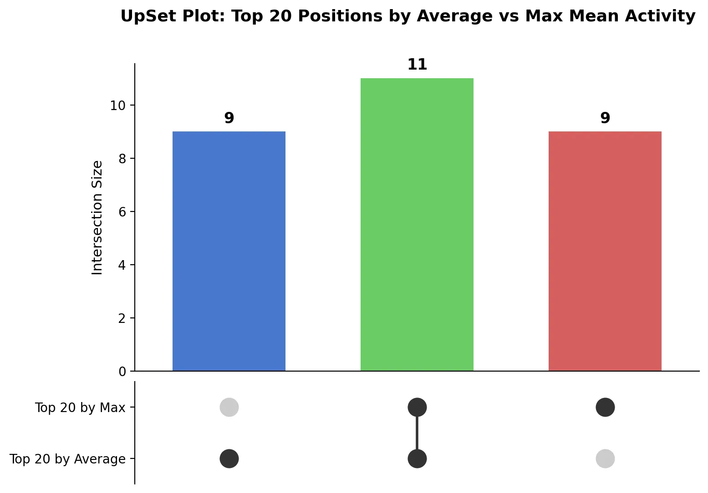
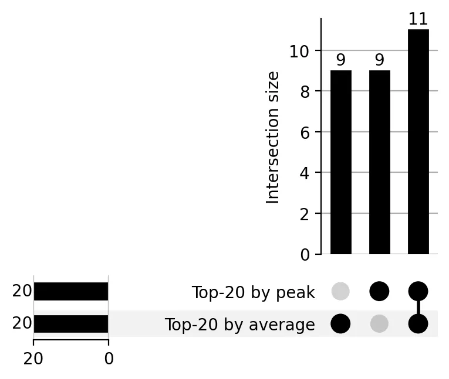
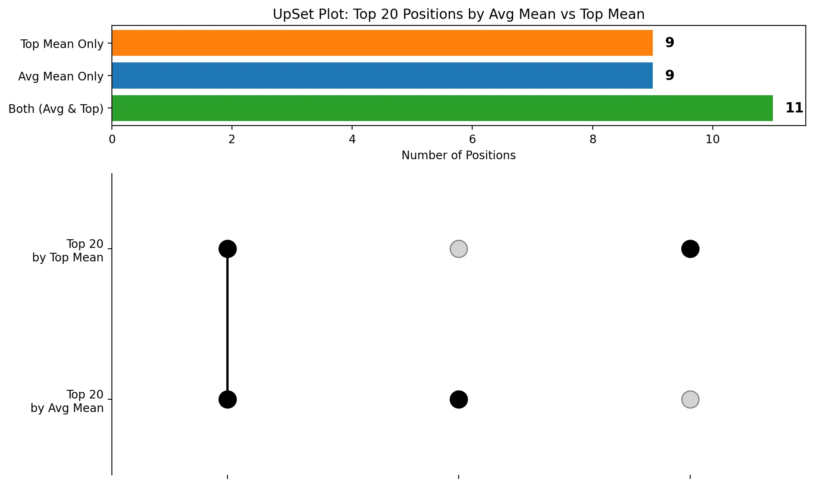

written by Eric J. Ma on 2026-04-08 | tags: marimo benchmarking llm notebooks automation evaluation opensource experiments cost markdown
In this blog post, I share my experience benchmarking several LLMs using the new Marimo Pair skill for a data analysis task. I tested models like Claude Opus, Sonnet, GLM-5.1, and others, evaluating their performance, cost, and adherence to coding instructions. Some models excelled, while others struggled with basic requirements. Curious to see which models stood out and what lessons I learned from this experiment?
Marimo Pair has been released!
I've known about it since 11 March, when Trevor Manz did a demo over a Google Meet call, and I'm thrilled to see it being announced officially! I also had Trevor showcase it to the Agentic Data Science Workshop that I led on 3 April as a fundraiser for the SciPy Conference Financial Aid Program.
Now, one thing I know about Trevor is that he almost exclusively agentically codes with Claude Code. But I'm an OpenCode user, and in the interest of remaining vendor-agnostic, I wanted to check to see how good Marimo Pair's agent skill is when, ahem, paired up with various LLMs within the OpenCode harness. To do so, I decided to spend a few dollars and do a quick benchmarking exercise.
To start, I verified that my skills environment doesn't contain anything that could be data science-y in nature, so as to avoid interfering with the marimo-pair skill. I checked my global skills:
marimo-pair-benchmark on main on ☁️ eric.ma@nonlinearlabs.ai ❯ npx skills list -g Global Skills Marimo Pair marimo-pair ~/.agents/skills/marimo-pair Agents: Claude Code, OpenClaw General agent-browser ~/.agents/skills/agent-browser Agents: not linked agents-md-improver ~/.agents/skills/agents-md-improver Agents: Claude Code, OpenClaw, Cursor ast-grep ~/.agents/skills/ast-grep Agents: not linked claudeception ~/.agents/skills/claudeception Agents: not linked continuous-learning-v3 ~/.agents/skills/continuous-learning-v3 Agents: not linked design-driven-dev ~/.agents/skills/design-driven-dev Agents: not linked find-skills ~/.agents/skills/find-skills Agents: Claude Code, OpenClaw, Cursor gh-activity-summary ~/.agents/skills/gh-activity-summary Agents: Cursor gh-cli ~/.agents/skills/gh-cli Agents: Cursor gh-daily-timeline ~/.agents/skills/gh-daily-timeline Agents: Cursor github-activity-summarizer ~/.agents/skills/github-activity-summarizer Agents: not linked google-calendar-manager ~/.agents/skills/google-calendar-manager Agents: not linked html-presentations ~/.agents/skills/html-presentations Agents: not linked pinchtab ~/.agents/skills/pinchtab Agents: not linked post-edit-error-check ~/.agents/skills/post-edit-error-check Agents: not linked publish-to-google-docs ~/.agents/skills/publish-to-google-docs Agents: Cursor revealjs ~/.agents/skills/revealjs Agents: Cursor roborev:address ~/.agents/skills/roborev-address Agents: not linked roborev:design-review ~/.agents/skills/roborev-design-review Agents: not linked roborev:design-review-branch ~/.agents/skills/roborev-design-review-branch Agents: not linked roborev:fix ~/.agents/skills/roborev-fix Agents: not linked roborev:respond ~/.agents/skills/roborev-respond Agents: not linked roborev:review ~/.agents/skills/roborev-review Agents: not linked roborev:review-branch ~/.agents/skills/roborev-review-branch Agents: not linked skill-creator ~/.agents/skills/skill-creator Agents: Claude Code, OpenClaw, Cursor skill-installer ~/.agents/skills/skill-installer Agents: not linked vault-title-renamer ~/.agents/skills/vault-title-renamer Agents: not linked write-like-eric ~/.agents/skills/write-like-eric Agents: not linked youtube-ingestion ~/.agents/skills/youtube-ingestion Agents: not linked
And within my repo, marimo-pair-benchmark:
marimo-pair-benchmark on main on ☁️ eric.ma@nonlinearlabs.ai ❯ npx skills list No project skills found. Try listing global skills with -g
Though the marimo pair skill is available globally, I decided to install it locally as an override.
marimo-pair-benchmark on main [?] on ☁️ eric.ma@nonlinearlabs.ai ❯ npx skills install marimo-team/marimo-pair
And so now we're ready to go:
marimo-pair-benchmark on main [?] on ☁️ eric.ma@nonlinearlabs.ai ❯ npx skills list Project Skills Marimo Pair marimo-pair ~/github/marimo-pair-benchmark/.agents/skills/marimo-pair Agents: Antigravity, Cursor, Gemini CLI, OpenCode
I then start a marimo server within this repo:
marimo-pair-benchmark on main [?] on ☁️ eric.ma@nonlinearlabs.ai ❯ uvx marimo edit --sandbox --no-token Create or edit notebooks in your browser 📝 ➜ URL: http://localhost:2719 💡 Tip: Coming from Jupyter? Guide: https://docs.marimo.io/guides/coming_from/jupyter/ 🧪 Experimental features (use with caution): external_agents 🌐 MCP servers: marimo
I intentionally start up in --sandbox and edit mode with --no-token to make it easier for the coding agent to connect.
Our task at hand is as follows. I have data from a paper I published while at Novartis.
marimo-pair-benchmark on main [?] on ☁️ eric.ma@nonlinearlabs.ai ❯ ls data/ired-novartis Permissions Size User Group Date Modified Git Name .rw-r--r--@ 1.0M ericmjl staff 7 Apr 21:22 -- cs1c02786_si_002.csv .rw-r--r--@ 21k ericmjl staff 7 Apr 21:22 -- cs1c02786_si_003.csv .rw-r--r--@ 12M ericmjl staff 7 Apr 21:22 -- ired-master-table.csv .rw-r--r--@ 12k ericmjl staff 7 Apr 21:22 -- layouts.csv .rw-r--r--@ 1.1k ericmjl staff 7 Apr 21:22 -- README.md
This file, cs1c02786_si_002.csv in particular includes single, double, and more mutations plus activity values, with the single point mutants covering a large fraction of the deep mutational scan space. I want to accomplish three things:
This serves as a microcosm of what we would do with a data analysis session.
Goal #2 is particularly instructive. In my first attempts at feeling out how to do this benchmark, I found out that UpSet is incompatible with Pandas 3.0, which invariably may get installed in the environment. I wanted to see how various AI models performed at this task.
Additionally, I also have additional requirements that I encoded into the AGENTS.md file for this repo:
With these in place, I started the benchmarking exercise.
The models we tested are:
In order to leave a working artifact behind, I created 7 notebooks, one for each model. As you will see below, I eventually evaluated each model on whether they passed each stage gate and what their earliest error mode diagnosis looked like.
In order to do the benchmarking fairly, I created one superprompt that outlined what the coding agent was supposed to do.
Use the marimo-pair skill here. Discover running sessions. Edit the notebook "NOTEBOOK_NAME_GOES_HERE". Read data/ired-novartis/cs1c02786_si_002.csv, identify the single point mutations, and plot me a heatmap of x-axis position, y-axis mutant letter, and heatmap value taken from the 'mean' column. When done, rank order the positions by average value of the 'mean' column, then rank order the positions by top value of the 'mean' column, and plot me an UpSet plot of the top 20 for each to visualize the set overlaps. Finally, write in for me a recommendation for what positions we should be mutating.
The agent is then tasked with executing.
To script this, I took advantage of opencode's ability to be scripted. The script is run_benchmark.sh in the repo. I used GLM5.1 to help me draft it, including discovering the exact models that opencode had configured to be available, and running the opencode sessions in parallel (totally doable!). Essentially it boils down to:
opencode run "your prompt here" --model provider/model-name
Additionally, I set up opencode.json to allow for access to the /tmp directory, because that allows the coding agent to do what it needs with code writing to get around heredoc limitations.
All in all, this computational experiment took me about 1 hour to set up.
I then ran the script run_benchmark.sh from within OpenCode (GLM 5.1 orchestrating), with a timeout of 10 minutes. Thanks to logging in JSON log files, I was able to programmatically convert them to Markdown using a custom Python script written by GLM 5.1. And with that, I can go in and start looking at the data.
To start, let's look at the cost of the experiment:
| Model | Cost | Input Tokens | Output Tokens |
|---|---|---|---|
| Claude Opus 4.6 | $1.62 | 76,770 | 16,575 |
| Claude Sonnet 4.6 | $2.00 | 213,803 | 27,689 |
| GLM-5.1 | $0.43 | 96,639 | 7,581 |
| Kimi K2.5 | $0.12 | 35,049 | 8,250 |
| Qwen 3 Coder | $0.07 | 208,308 | 8,386 |
| MiniMax M2.7 | $0.04 | 14,419 | 4,074 |
| Gemma 4 31B | $0.03 | 170,280 | 3,986 |
| Total | $4.31 | 815,268 | 76,541 |
As it turns out, Opus is undisputedly the most expensive per token, but Sonnet 4.6 did more work this time round so its costs were higher.
I also decided to check whether the notebooks that were generated were valid notebooks or not. This is what we have:
| Model | marimo check | Markdown cells |
|---|---|---|
| Claude Opus 4.6 | PASS | Yes (100%) |
| Claude Sonnet 4.6 | PASS | Mostly (86%) |
| GLM-5.1 | PASS | Yes (100%) |
| Kimi K2.5 | FAIL | Mostly (88%) |
| Qwen 3 Coder | PASS (warnings) | No (0%) |
| MiniMax M2.7 | FAIL | No (0%) |
| Gemma 4 31B | PASS (warnings) | No (0%) |
A note on the columns: "marimo check" is the result of running uvx marimo check <notebook_name>.py, which catches issues like redefined variables and invalid cells. Notably, Kimi K2.5 and MiniMax M2.7 failed this check due to re-defined variables. "Markdown cells" is the percentage of code cells that have a preceding markdown cell, which was something I explicitly required in the instructions.
And to elaborate on the markdown cells point:
| Model | Code Cells | MD Cells | Code w/o preceding MD | Coverage |
|---|---|---|---|---|
| Claude Opus 4.6 | 6 | 7 | 0 | 100% |
| Claude Sonnet 4.6 | 7 | 8 | 1 | 86% |
| GLM-5.1 | 8 | 9 | 0 | 100% |
| Kimi K2.5 | 8 | 8 | 1 | 88% |
| Qwen 3 Coder | 1 | 0 | 1 | 0% |
| MiniMax M2.7 | 6 | 0 | 6 | 0% |
| Gemma 4 31B | 1 | 0 | 1 | 0% |
We see that MiniMax M2.7 completely failed to include markdown cells, even though it is, supposedly, a model that is as capable as Opus 4.6.
Digging deeper into each of the models, and whether they passed each stage gate, I looked at the corresponding Marimo notebooks and evaluated them for whether they created the relevant artifacts successfully:
| Model | G1: Heatmap | G2: UpSet Plot | G3: Recommendations |
|---|---|---|---|
| Claude Opus 4.6 | Yes | Yes | Yes |
| Claude Sonnet 4.6 | Yes | Yes | Yes |
| GLM-5.1 | Yes | Yes | Yes |
| Kimi K2.5 | Yes | No | No* |
| Qwen 3 Coder | No | No | No |
| MiniMax M2.7 | Yes | No | No |
| Gemma 4 31B | No | No | No |
To pass a stage gate, the plot (G1, G2) or markdown (G3) cell must be rendered in the notebook. Writing the code is not enough; it has to actually execute and show up.
Kimi K2.5 technically did write the recommendation, but I am calling it unsuccessful because it did not render out. This stricter criteria explicitly demands that the model wiggle its way out of errors it encounters.
One pattern I noticed across models is that many of them bundled imports into the same cell as code that used them. In Marimo's execution model, this is a problem: if two cells both import pandas, the notebook fails with a redefined variable error. Upon noticing this, I decided to explicitly quantify:
| Model | Code Cells w/ Imports | Total Code Cells |
|---|---|---|
| Claude Opus 4.6 | 1 | 6 |
| Claude Sonnet 4.6 | 1 | 7 |
| GLM-5.1 | 1 | 8 |
| Kimi K2.5 | 2 | 8 |
| Qwen 3 Coder | 0 | 1 |
| MiniMax M2.7 | 3 | 6 |
| Gemma 4 31B | 0 | 1 |
Every model can benefit from being steered to reduce the number of code cells with imports, which would dramatically reduce the incidence of Marimo errors from redefined symbols.
As mentioned earlier, in my initial explorations I discovered that the upsetplot library is incompatible with Pandas 3.0, which invariably gets installed in the sandboxed environment. This made the UpSet plot task an especially interesting test of how each model handles a real-world dependency conflict. Here is how they fared.
Opus, in particular, produced a beautiful UpSet plot out of raw matplotlib:

While Sonnet went ahead and patched UpSet appropriately to make it work within the notebook:

I was duly impressed by Sonnet taking the initiative to patch UpSet live in the notebook.
On the other hand, GLM 5.1's UpSet plot is really weird:

Other pointers of note: Gemma 4 and Qwen3 Coder Next produced nothing in the notebook. Both completely failed at this task. I am not sure what is doable here to salvage these models.
GLM 5.1 gave very weirdly formatted markdown cells, in which \n\n was not rendered but preserved verbatim.
This is probably fixable by adding in additional instructions on how to write and format Markdown cells using Marimo's code mode APIs.
First off: Gemma 4 31B and Qwen 3 Coder completely failed at this task. I think it is safe to say we can ignore these two going forward.
That leaves Claude Opus 4.6, Sonnet 4.6, GLM-5.1, Kimi K2.5, and MiniMax M2.7. Based on the data above, here are four things I want to try. The key discipline: deploy one change at a time, re-run the benchmark, and measure. If you change four things at once and performance improves, you will never know which change mattered. Stop when the KPIs hit acceptable levels.
1. Add import isolation examples to the skill. Every model had at least one cell that mixed imports with executable code. The fix is simple: add an explicit two-cell example to the marimo-pair skill (cell 1: imports only; cell 2: code that uses them). MiniMax had 3 cells mixing the two, which directly caused its marimo check failure. Give weaker models a concrete template to follow, re-run, and check whether the "code cells with imports" count drops to zero.
2. Fix GLM-5.1's newline rendering. GLM wrote mo.md(r"""..text with \n\n..""") instead of using actual newlines. One line in the skill instructions ("use actual line breaks in markdown strings, not \n escape sequences") should resolve this entirely. Re-run and check whether GLM's markdown cells render correctly.
3. Help Kimi K2.5 self-correct redefined variables. Kimi is 1/10th the cost of Opus and scored 88% on markdown coverage, making it the highest-leverage model to fix. Its failure was at error recovery, not code generation. The intervention: add uvx marimo check as a mandatory post-edit step in the skill. If Kimi can self-correct its redefined variables, it becomes a viable budget alternative to Opus and Sonnet. This should get even easier with marimo PR #9056, which exposes cell execution errors directly through the code_mode API, giving agents built-in self-correction visibility without needing a separate marimo check step.
4. Bake a post-edit validation loop into the marimo-pair skill. More broadly, the single most impactful change would be adding a "run it, check it, fix it" loop to the skill file itself (SKILL.md), not AGENTS.md: after writing each cell, run it; after writing the full notebook, run marimo check; fix any errors. This belongs in the skill because it is universal to any marimo-pair session, whereas AGENTS.md is project-specific. This would help Kimi, MiniMax, and potentially GLM all move up a tier, because their failures were in error recovery, not in code generation.
One caveat to this analysis is that it is one-shotted with a superprompt. This is decidedly not how people do their data analysis work, but it is also the best guardrail against my biases in interacting ad-hoc with AI interfering with a fair comparison. (For example, I can confidently say that Opus and Sonnet were smooth as butter when I did an ad-hoc test to feel out how to work with Marimo Pair.)
If Kimi K2.5 were able to resolve redefined variable issues autonomously or be steered away from doing that to begin with, I am confident it would be able to be a great open weight alternative to Opus 4.6 and Sonnet 4.6. This is especially in light of it being extremely cost-effective at performing the analysis at ~1/10th the cost of Opus 4.6. It handled the creation of markdown cells well, failing to accomplish the task only on technicalities, and though its prose was qualitatively shallower than Opus 4.6, I still think it can serve as a first pass to delivering an easily understandable artifact for others.
I did one round of measurement here. If we want to systematically improve this and turn it into long-running evals, the next step would be to identify a second task along which to generate transcript and notebook data for us to mine, and systematically measure agent KPIs for that new task as well. Over time, this builds a corpus of eval data that makes model comparison rigorous rather than anecdotal.
This was a pretty fun exercise in measuring and evaluating the performance of various models on this task. Like Biology experiments, LLM evals are never going to be complete: the number of axes of variations we can try is combinatorially explosive.
More broadly, I think often about how experiments get designed. Not in the statistical sense, but in an informational sense. Are we playing out experiments and their possible conclusions so that they are designed to be actionable whichever way the result pans out? If not, we have work to do.
Additionally, experiments involve measurement, and measurement are an integral part of being a data scientist. Hamel Husain, whose course with Shreya Shankar on LLM evals was one that influenced my thinking around the matter, notes that there will be a forceful revenge of the data scientist in an AI age. This is because the skill of experiment design and measurement were always the "science" part of "data science".
Another thought also comes to mind: I have seen data scientists do experimentation without systematic measurement. I'm going to go out on a limb and say this: it's vibe experimentation, and I am using this term pejoratively. It feels good. But it is ultimately unproductive. If you do vibe experimentation, you will get stuck tweaking the digital equivalent of an entangled biological system, with no bearings to tell you whether your tweaks are doing any good or not! You must measure how good the LLM or agent is, and you must define key performance indicators (KPIs) for the LLM. In my case here, I defined multiple KPIs: cost, stage gated progress, adherence to code import instructions (all failed), adherence to markdown documentation instructions.
And to echo what I learned from the LLM Evals course, those KPIs must be application-specific. If you choose to be intellectually lazy and go with generic pre-defined metrics, you will never develop the logically actionable metric that gives you hypotheses to test further. In my case, the markdown cell adherence and code import adherence metrics pointed immediately to editing the instruction files (e.g. skills or AGENTS.md).
Now to be clear, there's no problem with initial vibe-based experimentation to feel out axes of variation and how to measure performance. I did that here, in a separate repo first, before I designed this measurement experiment. The important part is this: as soon as you have a grasp of how to measure the performance, you must systematically measure that KPI. Otherwise, you will be left groping in the dark.
If you're curious to see the full results, including logs, chat transcripts, and the generated notebooks, check out the marimo-pair-benchmark repository.
And Trevor, if you ever chance upon this blog post, I hope the data and methodology are helpful for you!
@article{
ericmjl-2026-benchmarking-llms-with-marimo-pair,
author = {Eric J. Ma},
title = {Benchmarking LLMs with Marimo Pair},
year = {2026},
month = {04},
day = {08},
howpublished = {\url{https://ericmjl.github.io}},
journal = {Eric J. Ma's Blog},
url = {https://ericmjl.github.io/blog/2026/4/8/benchmarking-llms-with-marimo-pair},
}
I send out a newsletter with tips and tools for data scientists. Come check it out at Substack.
If you would like to sponsor the coffee that goes into making my posts, please consider GitHub Sponsors!
Finally, I do free 30-minute GenAI strategy calls for teams that are looking to leverage GenAI for maximum impact. Consider booking a call on Calendly if you're interested!